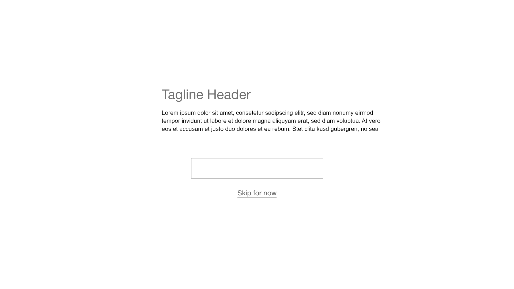
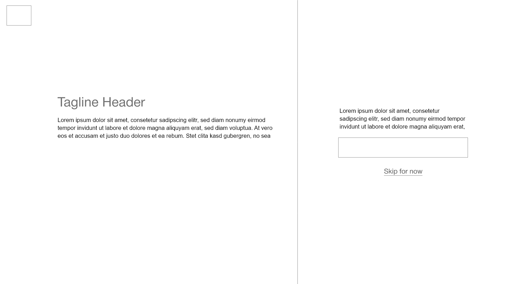
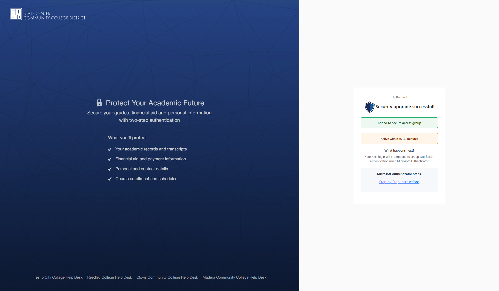
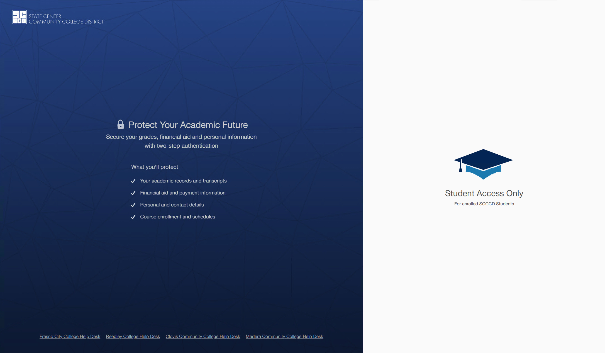
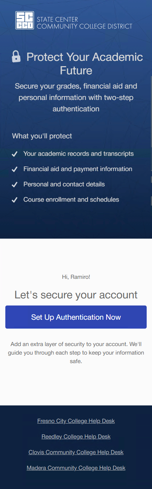
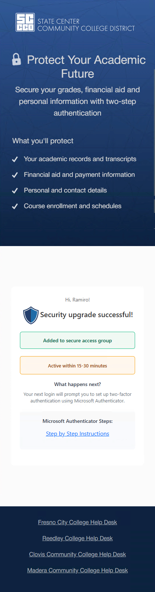
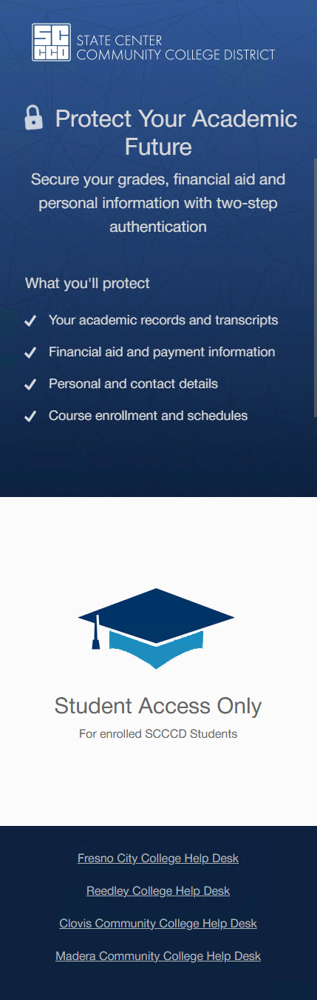

CASE STUDY
Student Multifactor Authentication

Project Overview
The Student MFA Management project was launched to encourage voluntary student enrollment in Multi-Factor Authentication (MFA) ahead of a future enforcement policy. The goal was to provide a smooth onboarding experience that minimized support overhead and allowed students to set up MFA without assistance.
By introducing MFA gradually, issues could be identified early, and the help desk could be spared an overwhelming influx of support tickets during full enforcement.
| Tech Stack | .NET Core, Microsoft Graph, JavaScript, Bootstrap |
|---|---|
| Project Type | Full-stack web app |
| Role | Lead Developer, UX Designer |
| Completion Date | Jul 2025 |

Key Features
- Self-Service MFA Enrollement: Students can sign up for MFA via an intuitive, mobile-friendly UI.
- Real-Time Group Assignment: Enrollment automatically adds the student to a pre-configured Entra group.
- Guided Enrollment Flow: The app verifies MFA status and provides clear next steps, ensuring students have completed the setup correctly.
- Policy Awareness : UI includes links to institutional documentation and reflects the MFA strategy and policy.

Project Gallery








Design and Development Insights
As the solo designer, developer, and tester, I was responsible for every stage of this project — from UX planning to final deployment. This gave me full ownership over the product experience and allowed for tight integration between design decisions and backend functionality.
Design Philosophy
I prioritized clarity, accessibility, and trust throughout the user interface. The target audience consisted of college students with mixed levels of technical confidence, so the design needed to be welcoming and frictionless.
- A single call-to-action to avoid decision paralysis
- Mobile-first layout to match student browsing habits
- Styling aligned with institutional branding and accessibility standards (WCAG 2.1 AA)
User Experience Goals
I designed the app to be intelligent and responsive:
- Automatically hides the MFA setup option if the student is already enrolled
- Provides real-time feedback and guidance through the enrollment flow
- Requires no training or help desk support to use
Development Highlights
- Microsoft Graph API Integration: Secure, app-only authentication to Entra ID (Azure AD), allowing real-time group verification and assignment.
- Responsive UI Implementation: Custom CSS and HTML optimized for mobile and accessibility, including screen reader and keyboard support.
- Testing Without a Dev Directory: Built-in fail-safes and logic checks to avoid affecting live accounts during development.
Security & Privacy Compliance
I adhered to FERPA guidelines and ensured that no student data was stored in the application. All authentication was handled through secure sessions, and Microsoft Graph API calls were scoped and logged with proper error handling.

Lessons Learned & Future Improvements
Refining Full-Stack Development Workflow
Since I handled both development and design, I streamlined my approach to balancing backend logic with UI/UX considerations for a seamless experience.
Enhancing UI/UX Best Practices
This project reinforced the importance of design consistency, accessibility, and user-centric layouts, ensuring IT staff could easily navigate the admin dashboard.
Optimizing Content Management for IT Staff
Designing a custom admin dashboard taught me how to simplify workflows for non-technical users while maintaining backend flexibility for future updates.
Improved Graphic & UI Design Efficiency
Handling all visual assets and UI components gave me the opportunity to refine my design workflow, from wireframing to final implementation, making future projects faster and more polished.
Future Improvement: Expanding Role-Based Permissions
While the dashboard is functional, a future enhancement could include granular user roles with different access levels for content updates, offering more security and control.
EXPLORE MORE
Continue through the portfolio.
Browse the complete project collection, or reach out if you would like to discuss the engineering and design decisions behind this work.